SUN CLOCK PROJECT
DINNER TIME
본 프로젝트는 산업디자인학과 디자인 스튜디오 1 기말 프로젝트의 일환으로 기획되었다.
컨셉의 핵심은 공간의 고유한 맥락과 사용자 간의 상호작용을 관찰하고, 이를 통해 사용자들이 무의식적으로 수용하던 환경적 요소를 의식적으로 자각하게 만드는 데 있다.
공부라는 명확한 목적으로 설계된 '교양분관'은 사용자들이 장시간 앉아 학업에 전념하는 특유의 행동 프로토콜을 가진다. 그 안에서 사용자들은 시간의 흐름을 잘 체감하지 못한다.
'SUN_CLOCK PROJECT'는 이처럼 무의식적으로 흘러가는 '시간'과 인지하지 못했던 '햇빛'의 관계성을 시각화해 사용자들에게 햇빛에 대한 의식을 심어주고자 한다.
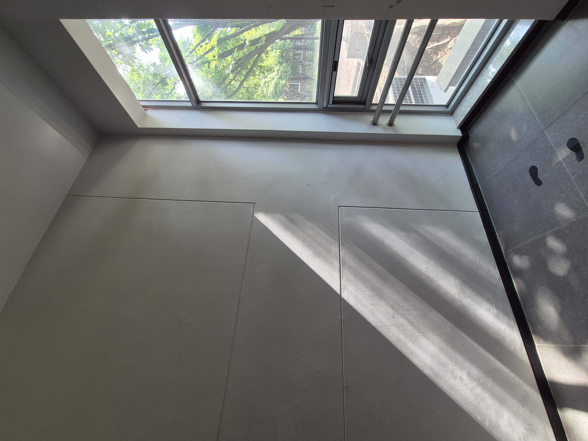

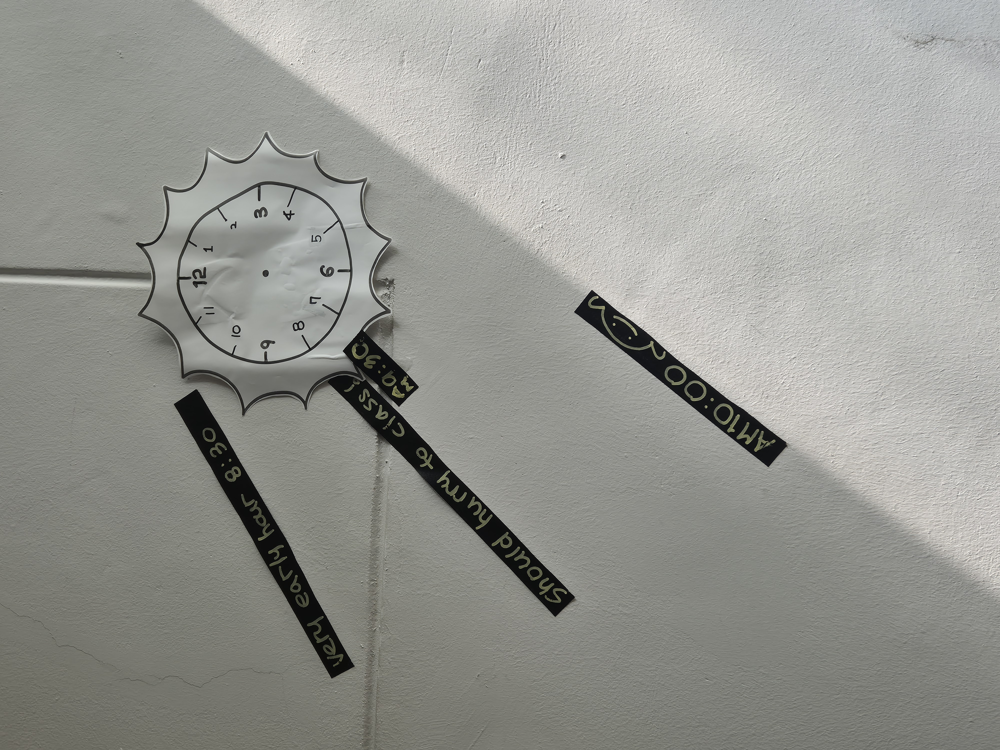
처음 시도는 날씨의 이유로 N25(산업디자인동)에서 오전에 진행되었다.
- 아침시간에 학생들이 강의실로 이동하기 위해 자주 이동하는 계단
- 아침시간에 빛이 들어오는 공간
으로써 좋은 조건을 가지고 있었기 때문에 N25 1층에 있는 엘레베이터 옆 계단을 장소로 지정하였다. 시트지를 이용해 시간에 따른 햇빛이 비추는 각도를 표현하고 해당 시트지에 시간에 따른 학생들의 상황에 알맞은 말들을 써넣었다.
해당 활동을 진행하였을 때 햇빛의 범위를 표현한 눈금이 눈에 잘 보이지 않고 멘트를 적을 수 있는 공간이 한정적이며 간결하게 표현하기 힘들다는 피드백을 스스로 얻었다.
6/10 프로젝트 진행
6/10 실제로 교양분관(N10) 2층 A번 룸에서 프로젝트를 진행하였다.
저번 시도의 피드백을 참고하여 자외선에 직접적으로 닿으면 무색에서 빨간색으로 변하는 '시광종이'를 이용해 'DINNER TIME!'이라는 멘트를 써 붙였다. 또한 햇빛이 지나는 길을 표현해야 했기 때문에 흰색 벽과 대조되는 검은색 시트지로 해당 시간 동안의 햇빛이 들어오는 범위를 표현하였다. 이때 검은 라인의 기준을 햇빛이 들어오는 시점의 가장 낮은 곳에서부터 햇빛이 더 이상 들어오지 않을 때의 가장 높은 시점으로 삼았다.
또한 사람들의 반응을 직접 눈으로 확인하기는 어려운 부분이 있고 홈페이지와의 상호작용을 위해 설문을 이용하고자 했다. 햇빛이 검은 라인 범위 내에 들어올 때에는 설문 참여가 가능하도록 하고, 들어오지 않는 모든 시간에는 참여가 불가능하다는 문구를 볼 수 있도록 QR 코드를 관리했다. 설문을 할 때 사람들이 홈페이지와 연결될 수 있도록 설문지 내에 홈페이지 주소를 넣었으며 해당 홈페이지를 들어감으로써 사람들이 이 프로젝트의 기획부터 해서 실행하기까지, 그리고 프로젝트에 담긴 의도를 확인할 수 있도록 했다.
[프로젝트 QR 코드]
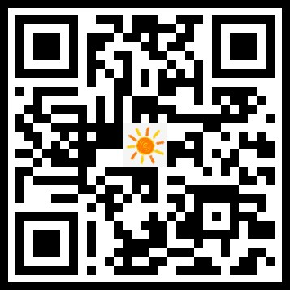

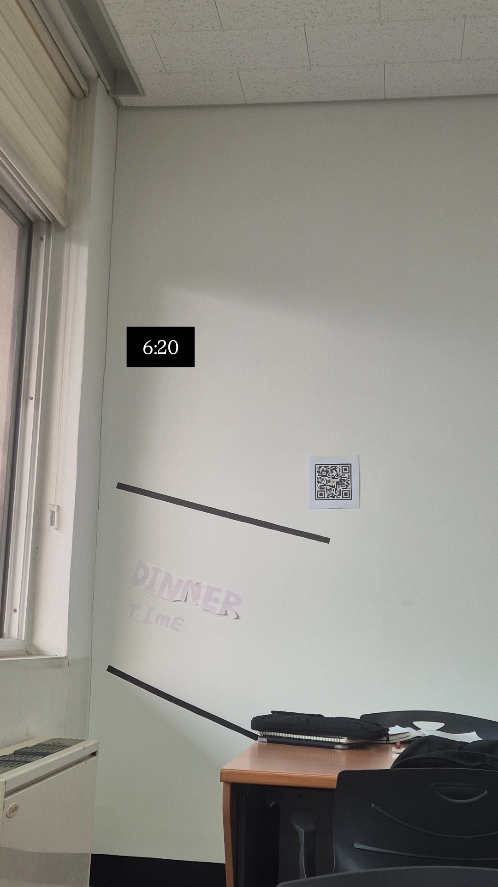
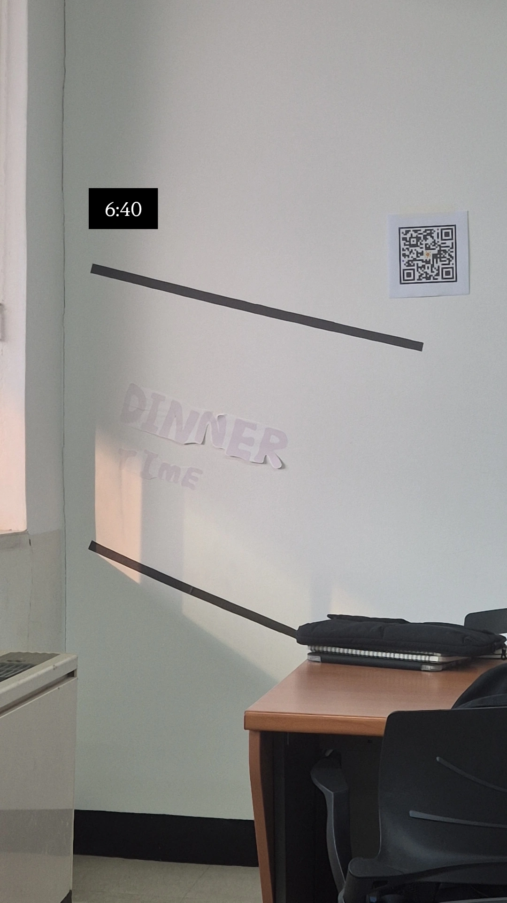
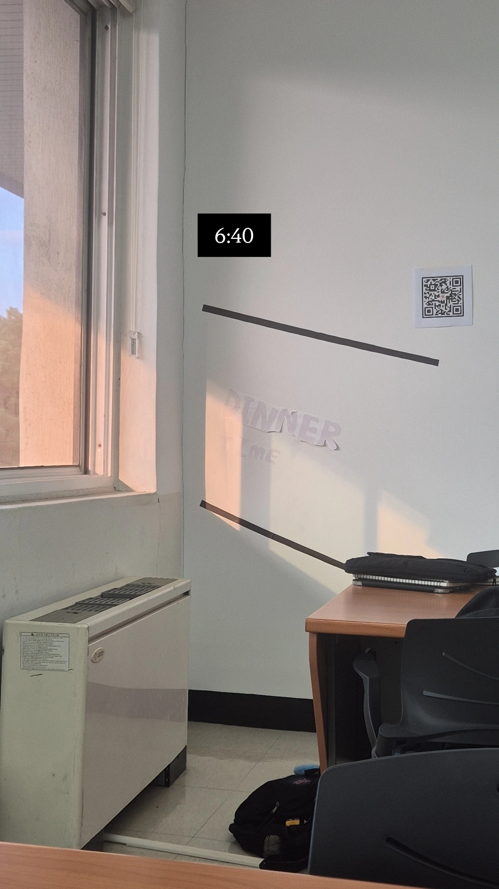
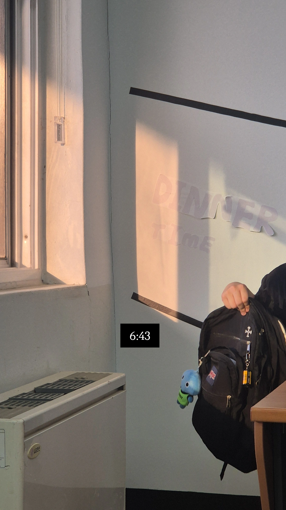
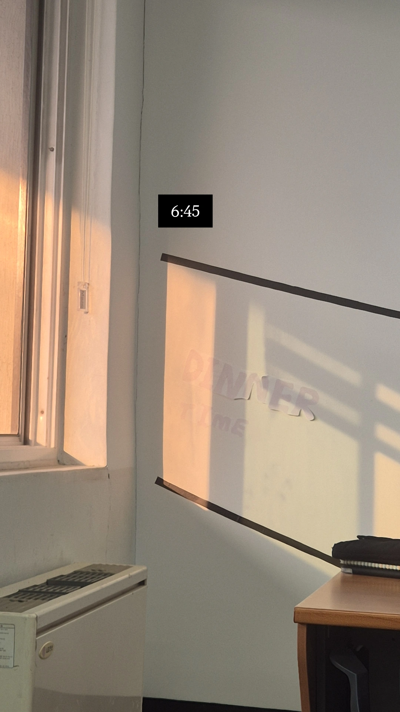
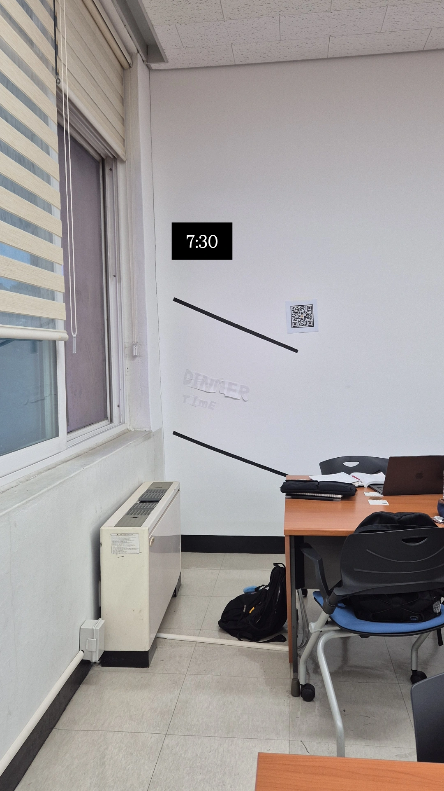
결론
오후 6시 30분~6시 50분정도 20분간 햇빛이 해당 검은 라인을 따라 창문을 통해 이동하였다.
QR코드의 조회수의 경우 해당 시간에 3회를 기록하였다.
피드백
시광종이를 이용해 적은 'DINNER TIME'이 간접 자외선에 의해 낮 오후에도 진하지는 않지만 빨간색으로 바뀌어 있었다.
때문에 목표로 하는 저녁 시간, 실제로 햇빛이 들어오는 시간에 극적인 색 변화를 확인할 수 없었다. 이는 공간을 이용하는 사람들에게 있어 해당 프로젝트를 이해하는데 어려움을 줄 것이라고 판단되었다.
6/11 프로젝트 보완 및 재구성
동일한 구성으로 진행하되 10일의 피드백을 반영하여 시광종이를 이용한 'DINNER TIME'을 제거하고 태양 아이콘이 'DINNER TIME!'을 말하고 있는 구성으로 바꿔 부착하였다.
또한 QR 코드에 'SCAN ME! WHEN?'을 추가적으로 적었다.
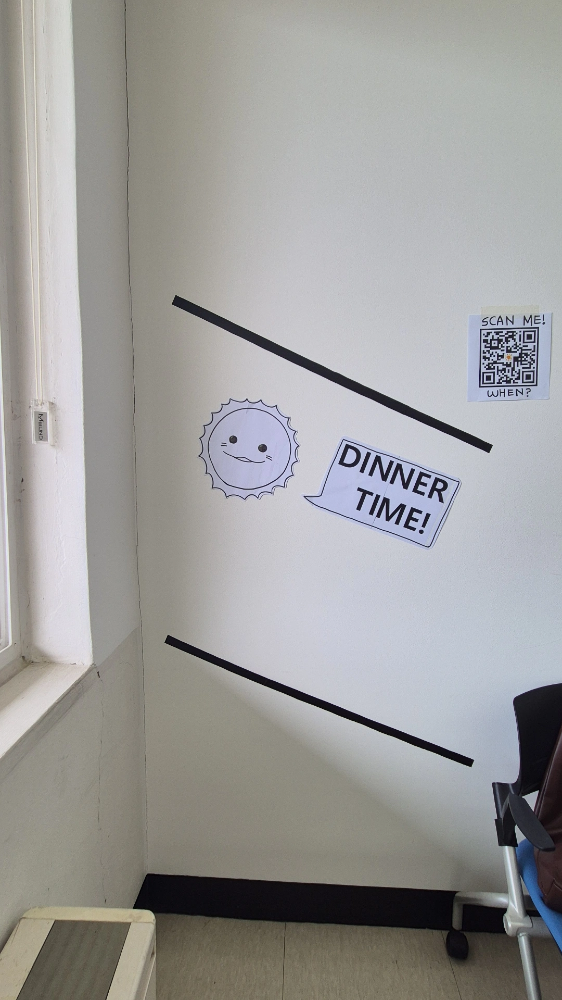
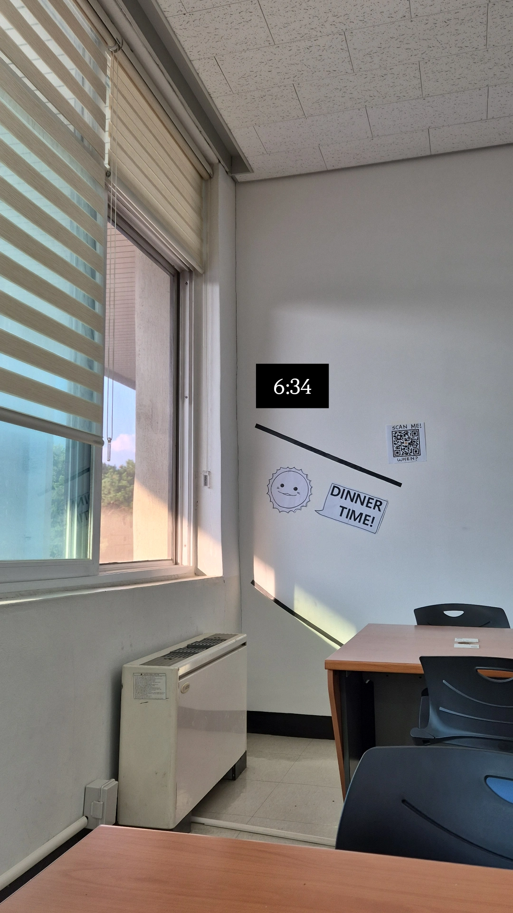
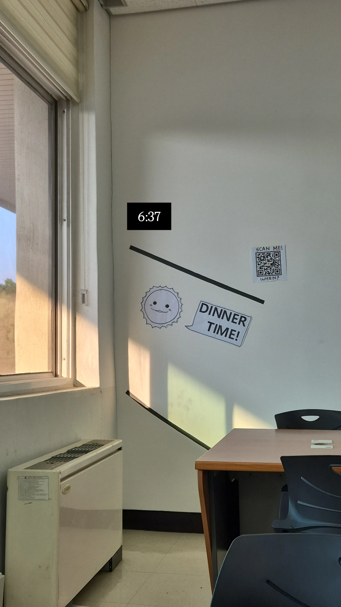
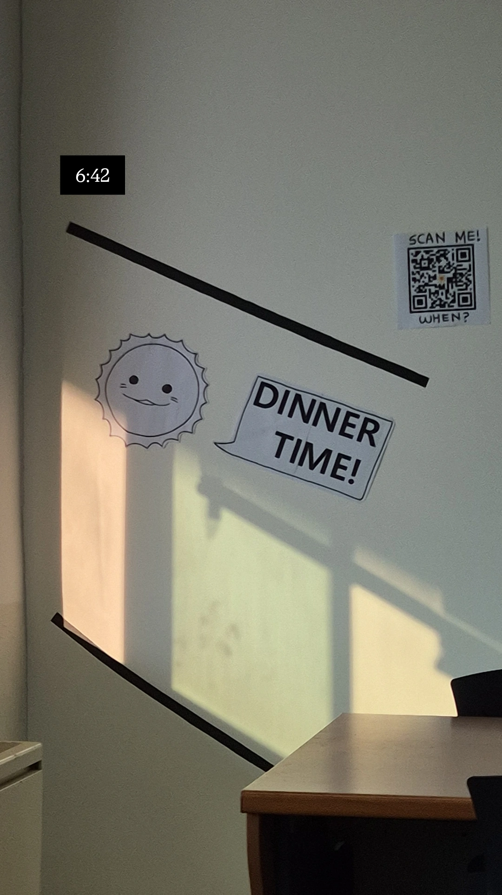
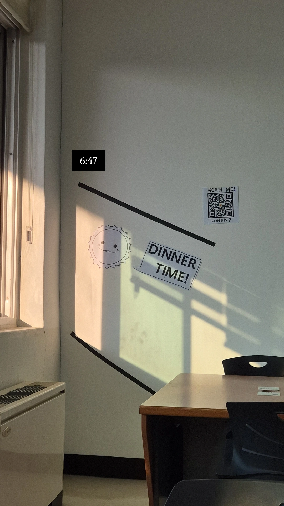
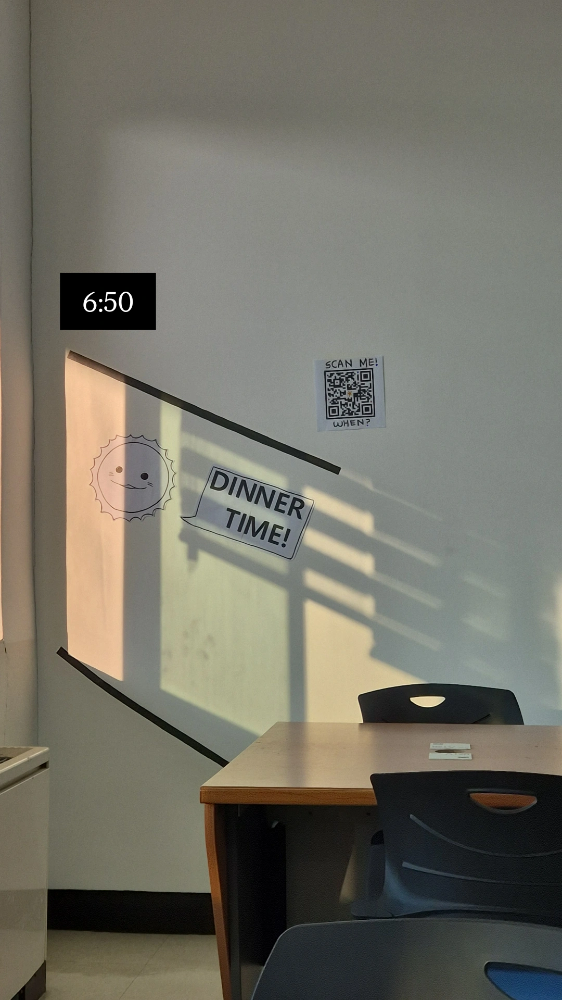
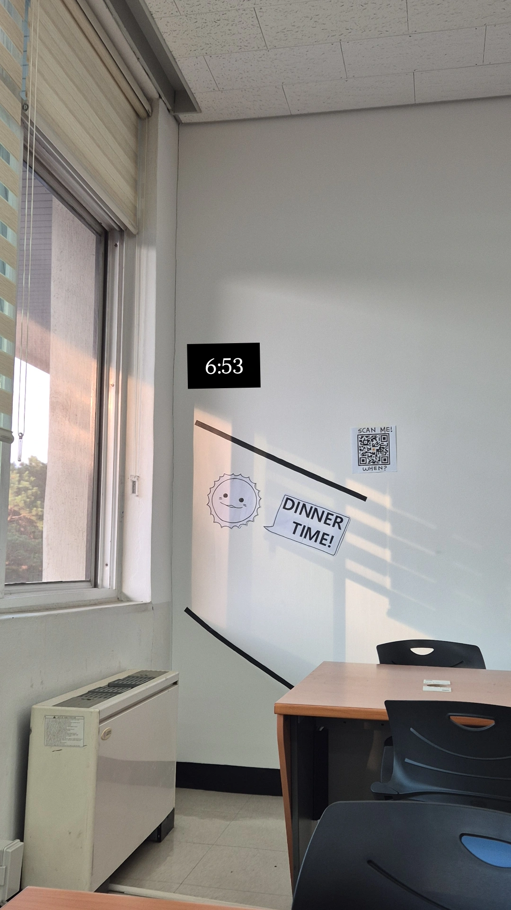
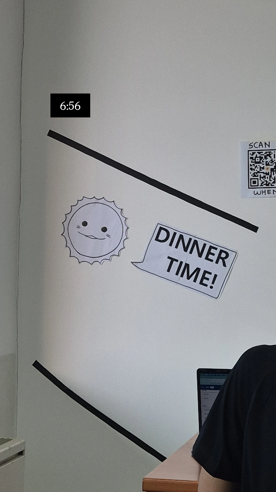
결론
오후 6시 30분~6시 50분정도 20분간 햇빛이 해당 검은 라인을 따라 창문을 통해 이동하였다.
QR코드의 조회수의 경우 해당 시간에 7회를 기록하였다. 이는 10일의 조회수보다 많은 숫자임을 감안할 때 사람들에게 보다 더 직관적으로 다가오고 시선을 끌었음을 확인할 수 있었다.
최종 결론
본 프로젝트는 인위적으로 통제된 학업 공간인 '교양분관'에서 사용자들이 망각하기 쉬운 자연적 요소인 '햇빛'과 '시간'의 관계성을 시각적 장치를 통해 개입(Intervention)시키고자 한 시도였다.
총 3차에 거쳐 모호한 시각적 피드백을 보완하여, 최종적인 프로젝트 진행에서는 직관적인 그래픽 언어와 아이콘을 통해 사람들의 의식할 부분을 명확히 했다. 그 결과 사용자들의 참여율(QR 코드 조회수)을 증가시킬 수 있었다.
이러한 결과는 사용자가 머무르는 공간의 맥락을 정밀하게 분석하고, 그에 맞는 직관적인 디자인 인터페이스를 제공할 때 비로소 무의식적인 환경 자극을 의식적인 경험으로 전환할 수 있음을 의미한다고 생각한다.
이번 'SUN_CLOCK PROJECT'를 진행하며 단순하고 심플한 공간 디자인을 통해서도 사람들의 행동 프로토콜과 생각을 유의미하게 변화시킬 수 있음을 확인하였다.